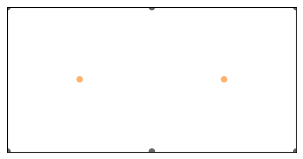
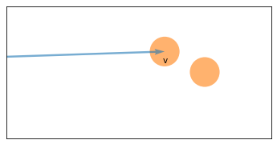
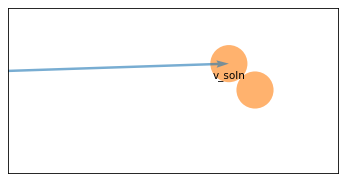
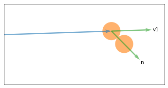
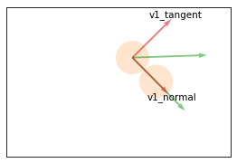
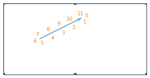

Think Linear Algebra is not for sale yet, but if you would like to support this project, you can buy me a coffee.
Dot Product#
Click here to run this notebook on Colab.
Show code cell content
%load_ext nb_black
%load_ext autoreload
%autoreload 2
Show code cell content
from os.path import basename, exists
def download(url):
filename = basename(url)
if not exists(filename):
from urllib.request import urlretrieve
local, _ = urlretrieve(url, filename)
print("Downloaded " + local)
download("https://github.com/AllenDowney/ThinkLinearAlgebra/raw/main/utils.py")
Show code cell content
import numpy as np
import pandas as pd
import matplotlib.pyplot as plt
from utils import decorate
Section#
9-foot table (standard regulation)
table_width = 100
table_height = 50
ball_diameter = 2.25
ball_radius = ball_diameter / 2
from utils import underride, decorate
def draw_circles(vs, **options):
underride(options, color="C1", alpha=0.6, lw=0)
ax = options.pop("ax", plt.gca())
for x, y in vs:
ax.add_patch(plt.Circle((x, y), ball_radius, **options))
from utils import cartesian_product
def draw_table():
fig, ax = plt.subplots(figsize=(5, 2.5))
ax.add_patch(plt.Rectangle((0, 0), table_width, table_height, fill=None))
xs = [0, 50, 100]
ys = [0, 50]
pockets = cartesian_product([xs, ys])
draw_circles(pockets, color="black")
# Remove ticks and labels
ax.set_xticks([])
ax.set_yticks([])
ax.set_xticklabels([])
ax.set_yticklabels([])
# Set the aspect ratio and limits
ax.set_aspect("equal", adjustable="box")
ax.set_xlim(0, table_width)
ax.set_ylim(0, table_height)
draw_table()
cue = np.array([25, 25])
target = np.array([75, 25])
draw_circles([cue, target])

from utils import polar_to_cartesian
r = 1
theta = 0.033
direction = np.array(polar_to_cartesian(r, theta))
direction
array([0.99945555, 0.03299401])
magnitude = 47
v = magnitude * direction
from numpy.linalg import norm
def distance_between(v1, v2):
return norm(v1 - v2)
pos1 = cue + v
pos2 = target
distance_between(pos1, pos2)
np.float64(3.399840844152523)
from utils import plot_vector
draw_table()
draw_circles([pos1, pos2])
plot_vector(v, cue)
label_vector(v, cue, 'v', label_pos=1, offset=0.015)
decorate(xlim=[60, 80], ylim=[20, 30])

def objective_func(magnitude, direction, pos1, pos2):
v = magnitude * direction
return distance_between(pos1 + v, [pos2])
objective_func(magnitude, direction, cue, target)
np.float64(3.399840844152523)
from scipy.optimize import minimize_scalar
def minimize_distance(direction, pos1, pos2):
args = (direction, pos1, target)
upper = distance_between(pos1, pos2)
solution = minimize_scalar(
objective_func, bounds=(0, upper), args=args, method="bounded"
)
assert solution.success
return solution
solution = minimize_distance(direction, cue, target)
solution.fun
np.float64(1.6497005413060046)
distance_to_min = solution.x
def will_hit(direction, pos1, pos2, thresh):
solution = minimize_distance(direction, pos1, pos2)
return solution.fun < thresh
will_hit(direction, cue, target, ball_diameter)
np.True_
def error_func(magnitude, direction, pos1, pos2, goal_distance):
actual_distance = objective_func(magnitude, direction, pos1, pos2)
return actual_distance - goal_distance
error_func(magnitude, direction, cue, target, ball_diameter)
np.float64(1.1498408441525232)
lower = distance_to_min - ball_diameter
upper = distance_to_min
from scipy.optimize import root_scalar
args = (direction, cue, target, ball_diameter)
solution = root_scalar(error_func, bracket=[lower, upper], args=args, method="brentq")
assert solution.converged
magnitude = solution.root
magnitude
48.442748672152476
v_soln = magnitude * direction
pos1 = cue + v_soln
pos2 = target
draw_table()
draw_circles([pos1, target])
plot_vector(v_soln, cue)
label_vector(v_soln, cue, 'v_soln', label_pos=1, offset=0.015)
decorate(xlim=[60, 80], ylim=[20, 30])

def normalize(v):
return v / norm(v)
v1 = v / norm(v)
v2 = np.array([0, 0])
n = normalize(pos2 - pos1)
from utils import plot_vectors
draw_table()
draw_circles([pos1, target])
plot_vector(v_soln, cue)
plot_vectors([v1, n], [pos1, pos1], labels=['v1', 'n'], scale=5, color="C2")
decorate(xlim=[60, 80], ylim=[20, 30])

def dot(v, w):
return np.dot(v, w)
v1_normal = dot(v1, n) / dot(n, n) * n
v1_tangent = v1 - v1_normal
draw_table()
draw_circles([pos1, target], alpha=0.2)
plot_vectors([v1 * 5, n * 5], [pos1, pos1], color="C2")
plot_vectors([v1_normal * 5, v1_tangent * 5], [pos1, pos1], labels=['v1_normal', 'v1_tangent'], color="C3")
decorate(xlim=[65, 80], ylim=[20, 30])

v2_normal = dot(v2, n) / dot(n, n) * n
v2_tangent = v2 - v2_normal
v1_after = v1_tangent + v2_normal
v2_after = v2_tangent + v1_normal
draw_table()
draw_circles([pos1, target], alpha=0.6)
plot_vectors([v1_after, v2_after], [pos1, pos2], scale=30, labels=['v1_after', 'v2_after'], color="C2")
<matplotlib.quiver.Quiver at 0x75ec64588a60>
pocket1 = np.array([100, 50])
pocket2 = np.array([100, 0])
will_hit(v2_after, pos2, pocket2, ball_diameter)
np.True_
will_hit(v1_after, pos1, pocket1, ball_diameter)
np.False_
from utils import label_vector
draw_table()
origin = cue
vector = np.array([30, 15])
plot_vector(vector, origin)
for pos in range(12):
label_vector(vector, origin, label=pos, label_pos=pos, color='C1')

Copyright 2025 Allen B. Downey
Code license: MIT License
Text license: Creative Commons Attribution-NonCommercial-ShareAlike 4.0 International